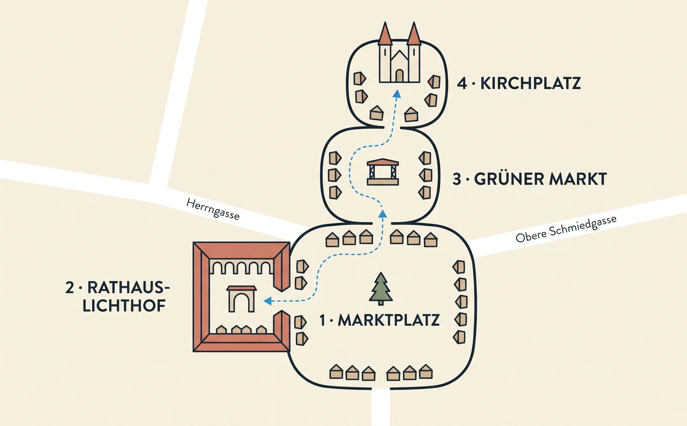

Marché de Noël de Rothenburg 2026 : dates, plan et conseils
Le Reiterlesmarkt se tient du 20 novembre au 23 décembre. Voici les quatre places, l'heure qui décide de votre soirée et ce qui piège les visiteurs.
Acheter le guide audio Le plan de la journée Réponses rapidesLe marché de Noël de Rothenburg ob der Tauber est petit. Soixante et un chalets, quatre places reliées, quinze minutes d'un bout à l'autre. Si vous connaissez Nuremberg ou Cologne, vous en faites le tour ici dans le temps qu'il faut là-bas pour faire la queue devant un stand de Glühwein.
C'est tout l'intérêt. L'attraction n'est pas le marché, c'est la ville ; le marché se contente d'y avoir lieu. Donnez donc le jour à Rothenburg et revenez aux chalets au crépuscule.
Le guide audio TouringBee de Rothenburg vous fait parcourir 25 étapes en quatre-vingt-dix minutes environ, exactement la tranche de journée où les lumières de Noël perdent encore contre le ciel.
Vous préparez encore le voyage entier ? Commencez par notre guide complet de Rothenburg ob der Tauber, ou notre avis sans complaisance sur Noël à Rothenburg, puis revenez ici pour les détails du marché.
En bref
- Dates
- 20 novembre – 23 décembre 2026
- Fermé
- Un seul jour — Totensonntag, dimanche 22 novembre
- Horaires
- dim.–jeu. 11h–19h · ven.–sam. 11h–20h
- Entrée
- Libre — ni barrière, ni billet
- Taille
- 61 chalets sur quatre places reliées
- Meilleure heure
- 16h–17h, tant que le ciel garde du bleu
Dates et horaires 2026
Deux points méritent d'être posés noir sur blanc, parce que les deux piègent.
Le marché ferme le Totensonntag. C'est le jour allemand du souvenir des morts, le dernier dimanche avant l'Avent. La Bavière suspend les divertissements publics et les chalets restent clos. En 2026, il tombe le 22 novembre — le troisième jour du marché. Réservez un week-end autour de cette date et vous perdez votre dimanche.
Le marché se termine le 23 décembre, pas après Noël. Il n'y a aucun marché entre Noël et le Nouvel An. Aucun. C'est l'erreur la plus fréquente quand on réserve Rothenburg en hiver.
La cérémonie d'ouverture
Ne confondez pas le premier jour du marché avec la cérémonie d'ouverture. Les chalets ouvrent le 20 novembre ; le Reiterle, lui, n'entre à cheval que le vendredi avant le premier dimanche de l'Avent.
En 2026, ce vendredi tombe le 27 novembre — une semaine après l'ouverture du marché. Le cavalier entre sur la place, salue la foule, le maire parle, on allume le sapin. Traditionnellement, les lumières s'allument à 17h, mais la ville n'a pas confirmé l'heure pour 2026.
Deux conséquences. Si vous voulez la cérémonie, la date d'ouverture du marché n'est pas la vôtre. Et si vous voulez le marché sans la plus grosse foule de la saison, évitez ce vendredi soir.
Le plan : quatre places et comment elles s'enchaînent

Oubliez un plan chalet par chalet — les marchands changent chaque année et toute liste vieillit. Ce qui ne change pas, c'est la forme. Le marché occupe quatre espaces qui se rejoignent, et les parcourir dans l'ordre prend quinze à vingt minutes sans se presser.
1. Marktplatz — la place principale, devant l'hôtel de ville. Le sapin est ici, et la cérémonie aussi. La Ratstrinkstube et son horloge occupent le côté nord ; les figurines mécaniques du Meistertrunk s'animent toutes les heures de 10h à 22h, vous les attrapez donc la tasse à la main.
2. Le Rathaus-Lichthof — la cour à arcades couverte, à l'intérieur même de l'hôtel de ville, qui s'ouvre sur le Marktplatz. Facile à manquer. C'est aussi la seule partie du marché sous toit, ce qui compte sous la pluie et par grand vent.
3. Grüner Markt — juste au nord du Marktplatz. La scène est ici, et les fanfares des villages francs alentour y jouent chaque jour. Le coin bruyant.
4. Kirchplatz — la place près de l'église Saint-Jacques, un peu plus loin. Le coin le plus calme, et le plus beau une fois la nuit tombée : les vitraux s'éclairent de l'intérieur et vous buvez votre tasse face à eux. Cela vaut aussi la peine d'entrer vous réchauffer.
Tout est plat, pavé et piéton. Vous entrez par où vous voulez : ni barrière, ni billet.
Ce que vous trouverez, et où
Les chalets mêlent nourriture, boisson et artisanat au lieu de les séparer : vous n'êtes jamais loin de l'un ni de l'autre. D'après le plan officiel des chalets de la saison dernière : sculpture sur bois et sur corne, casse-noisettes et pyramides de Noël de l'Erzgebirge, lainages et chaussons de feutre, étoiles de Noël et guirlandes lumineuses, un carrousel pour enfants, une crèche, et un chalet dédié au retour des tasses.
À manger, cherchez ce qu'aucun marché d'une autre ville ne vous donnera : Schneeballen, la spécialité de Rothenburg, déclinée l'hiver en pomme-cannelle et en clou de girofle ; bratwurst d'un demi-mètre ; Käsespätzle, Leberkäse, Schäufele, marrons chauds, Lebkuchen, Stollen et gebrannte Mandeln. On trouve aussi des soupes et des bratwurst véganes, plus récentes que l'image du marché ne le laisse croire.
Côté boisson, oubliez le Glühwein rouge que vous connaissez. La Franconie le boit blanc — Weißer Glühwein, à base de Silvaner et de Müller-Thurgau locaux : plus sec, épicé autrement, et servi dans presque chaque chalet d'ici. À côté, cherchez le Quittenglühwein (au coing), la Feuerzangenbowle, de l'hydromel dans une corne à boire, et le Rotbier franconien si vous voulez autre chose que du sucré.
La tasse. Chaque boisson chaude est consignée, en général 3–4 €, et un chalet ne fait rien d'autre que reprendre les tasses. Gardez la vôtre en souvenir si elle vous plaît — la consigne en est le prix, personne n'y voit d'inconvénient. Le motif change chaque saison : c'est le souvenir le moins cher que vous rapporterez.
Quand venir
À la mi-décembre, le soleil se couche sur Rothenburg à 16h20, et le marché ferme à 19h ou 20h. Le marché se vit donc le soir, et il ressemble aux photos environ une heure avant et une heure après le coucher du soleil.
- 11h–15h — ouvert, mais terne : lumière du jour grise, guirlandes noyées dans le ciel, autocars au maximum. Ils arrivent vers 10h30 et sont repartis à 16h. Donnez ces heures à la ville, pas au marché.
- 16h–17h — l'heure. Ciel bleu derrière les chalets illuminés et les fenêtres éclairées. Si vous ne prenez qu'une photo à Rothenburg, prenez-la maintenant.
- Après 17h — nuit complète, chaleur, la foule de ceux qui sont restés. Le meilleur moment pour manger et boire pour de bon.
Le plus calme : les après-midi de semaine, la première semaine. Le plus chargé : le vendredi d'ouverture, tous les samedis et les deux week-ends avant Noël.
Encore une affaire d'horloge : le marché ferme, pas l'éclairage des façades. Après 19h en semaine, les guirlandes sont toujours allumées et les rues sont quasi vides. C'est la meilleure heure de Rothenburg, et elle ne coûte rien.
Un plan qui fonctionne
Jusqu'à 15h — la ville, tant qu'il fait jour : le rempart, le Plönlein, la Herrngasse, les ruelles derrière la place. Le parcours TouringBee couvre tout cela en quatre-vingt-dix minutes environ et se termine près du marché.
15h–15h45 — une chose au chaud : le musée allemand de Noël dans la Herrngasse, ou un café. À savoir : devant la boutique Käthe Wohlfahrt, on fait la queue de la fin de matinée à la fin de l'après-midi en saison — pour l'éviter, allez-y à l'ouverture, à 9h, avant tout le reste.
16h–17h — le Plönlein d'abord, puis montez au Marktplatz tant que l'heure bleue tient. Pendant le marché, la tour de l'hôtel de ville reste ouverte jusqu'à 18h, et jusqu'à 19h du vendredi au dimanche : vous pouvez donc monter de nuit. 220 marches, une trappe où l'on passe un par un tout en haut, et la caisse là-haut plutôt qu'en bas, espèces uniquement — 4 € adultes, 2 € moins de 14 ans. De la plate-forme, à 52 mètres, vous regardez le marché s'allumer sous vous.
Après 17h — mangez d'abord, buvez ensuite. Et regardez s'ouvrir la fenêtre de l'Avent au deuxième étage de l'hôtel de ville : une différente chaque soir, réalisée par des classes et des groupes de jeunes de la ville.
Plus tard — un tronçon de rempart dans le noir, gratuit et ouvert à toute heure. Puis la tournée du Veilleur de nuit à 21h30, si elle a lieu.
Et une demi-heure après la fermeture du marché, refaites la Herrngasse et le Plönlein. De jour, ce sont les endroits les plus piétinés de la ville ; de nuit, vous les aurez presque pour vous, avec l'éclairage toujours allumé. Cette demi-heure est la raison de dormir à l'intérieur des murs.

Rothenburg à pied — visite audio en autonomieAccès immédiat
- 100 % hors ligne — sans Wi-Fi ni données
- Carte GPS hors ligne — vous lancez chaque piste vous-même sur place
- 25 étapes du Marktplatz au bastion de l'Hôpital
- 1,5–2 heures de marche, à votre rythme
Notes pratiques
Dates, tarifs et horaires vérifiés pour la saison 2026/27. Vérifiez les sites officiels avant de partir — tout cela change chaque année.
Espèces. Prenez-en. La caisse de la tour de l'hôtel de ville se trouve en haut de la montée, pas en bas, et n'accepte que les espèces ; les petits exposants vont aussi plus vite avec.
Météo. En décembre, les maximales dépassent le gel de quelques degrés, les soirées tournent autour de zéro, et la pluie l'emporte sur la neige. Ce qui compte davantage : vous resterez immobile dehors, dans le noir, pendant des heures, et c'est plus froid que de marcher ; le vent remonte la vallée de la Tauber le long des murs — sur le Marktplatz découvert, il mord plus fort que ne le dit le thermomètre. Bon manteau, bonnet, gants, semelles épaisses qui tiennent sur les pavés mouillés. Le Rathaus-Lichthof est la seule partie du marché sous toit.
Y aller. Rothenburg n'a pas de gare de grande ligne : vous changez à Steinach (b Rothenburg) pour la courte navette, depuis Wurtzbourg, Ansbach ou Nuremberg. En voiture, c'est à l'écart de l'A7, avec les parkings P1–P5 hors les murs. Un samedi de l'Avent, ils sont pleins à midi et la file s'allonge aux portes : venez avant 11h ou après 16h. La plupart des rues de la vieille ville sont fermées aux visiteurs en voiture entre 11h et 16h — si votre hôtel est intra-muros, demandez-lui l'itinéraire d'accès à l'avance, car les GPS envoient ici régulièrement les voitures dans la zone piétonne. Un piège hivernal : le car de la Route romantique ne circule pas en décembre, uniquement de mai à la mi-septembre : tout plan bâti dessus tombe à l'eau en Avent.
Dîner. Les cuisines des Gasthöfe traditionnels ferment tôt — après 21h, un plat chaud devient difficile à trouver. Si vous voulez dîner assis plutôt que sur le marché, réservez une table pour 19h–19h30, juste après la fermeture des chalets en semaine.
Où dormir. Quelques milliers de lits d'hôtes pour une ville de 11 400 habitants, et les week-ends de l'Avent intra-muros se remplissent des mois à l'avance. Pour dormir dans la vieille ville en décembre, réservez tôt.
Combiner avec un autre marché. Le Christkindlesmarkt de Nuremberg est le complément évident — environ une heure et demie de train, avec le même changement à Steinach, et rien à voir : immense, dense, célèbre. Vérifiez ses dates séparément, elles ne sont pas celles de Rothenburg. Si vous y allez, le même ordre fonctionne là-bas : le guide audio TouringBee de Nuremberg vous fait traverser la vieille ville de jour, et vous gardez le marché pour le soir.
Questions fréquentes
Quand a lieu le marché de Noël de Rothenburg en 2026 ?
Du 20 novembre au 23 décembre 2026. Il ferme un seul jour, le Totensonntag, le 22 novembre. Horaires : 11h–19h du dimanche au jeudi, 11h–20h vendredi et samedi.
Le marché de Noël de Rothenburg est-il gratuit ?
Oui. Ni droit d'entrée, ni billet. Vous ne payez que ce que vous mangez, buvez et achetez, plus les entrées des musées et de la tour si vous y montez.
Quelle est la taille du marché de Noël de Rothenburg ?
61 chalets sur quatre places reliées — Marktplatz, Rathaus-Lichthof, Grüner Markt et Kirchplatz. Quinze à vingt minutes pour tout parcourir.
Le marché est-il ouvert après Noël ?
Non. Il se termine le 23 décembre. Il n'y a aucun marché de Noël à Rothenburg entre Noël et le Nouvel An.
Quand a lieu la cérémonie d'ouverture ?
La ville la tient le vendredi avant le premier dimanche de l'Avent, soit le 27 novembre en 2026 — une semaine après l'ouverture des chalets. Le Reiterle arrive à cheval et on allume le sapin. Traditionnellement, les lumières s'allument à 17h, mais la ville n'a pas confirmé l'heure pour 2026.
Que manger au marché de Noël de Rothenburg ?
Les Schneeballen sont la spécialité locale — prenez-en une petite, à partager, elles sont sèches par construction. Sinon : bratwurst d'un demi-mètre, Käsespätzle et marrons chauds, avec un Quittenglühwein ou une Feuerzangenbowle à boire.
Quel Glühwein boit-on à Rothenburg ?
Du blanc — le Weißer Glühwein, à base de Silvaner et de Müller-Thurgau francs. Il est plus sec et épicé autrement que le rouge que vous connaissez, et presque chaque chalet d'ici le sert. À essayer aussi : le Glühwein au coing et la Feuerzangenbowle.
Peut-on monter à la tour de l'hôtel de ville le soir ?
Oui. Pendant le marché, elle ouvre jusqu'à 18h, et jusqu'à 19h du vendredi au dimanche, soit bien après la nuit tombée. 220 marches, avec une trappe où l'on passe un par un tout en haut ; la caisse est là-haut et n'accepte que les espèces — 4 € adultes, 2 € moins de 14 ans. La plate-forme, à 52 mètres, domine toute la place illuminée.
Quel est le meilleur moment de la journée pour venir ?
Entre 16h et 17h. Le soleil se couche à 16h20 à la mi-décembre, les lumières sont déjà allumées et le ciel garde du bleu. Avant 16h, le marché paraît terne ; après 17h30, le contraste de l'heure bleue a disparu.
Poursuivre la visite
Certains liens sortants de ce site sont des liens affiliés. Si vous réservez par leur intermédiaire, nous pouvons toucher une commission, sans surcoût pour vous.
Parcourez Rothenburg avant que les lumières s'allument
Vingt-cinq étapes du Marktplatz au bastion de l'Hôpital — quatre-vingt-dix minutes de jour bien employées, puis le marché.
Obtenir la visite audio — dès 9,99 €